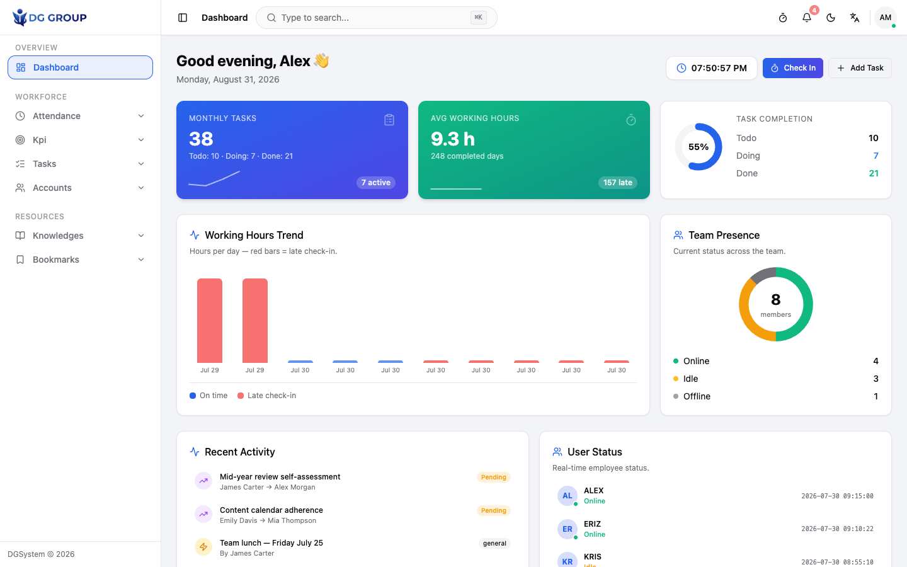
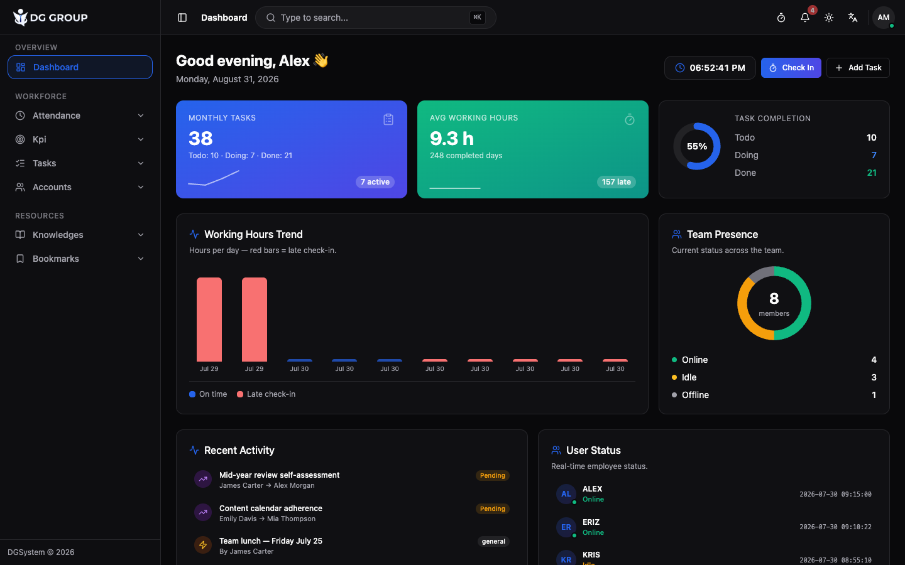
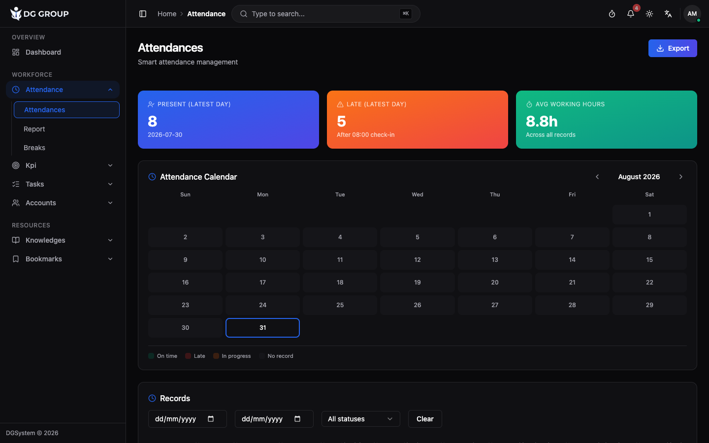
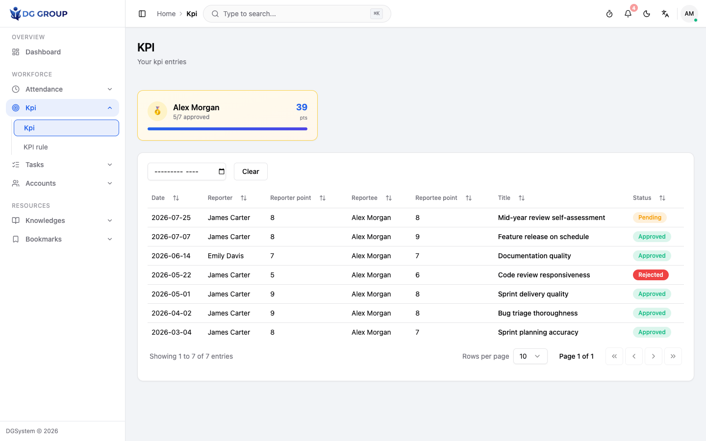
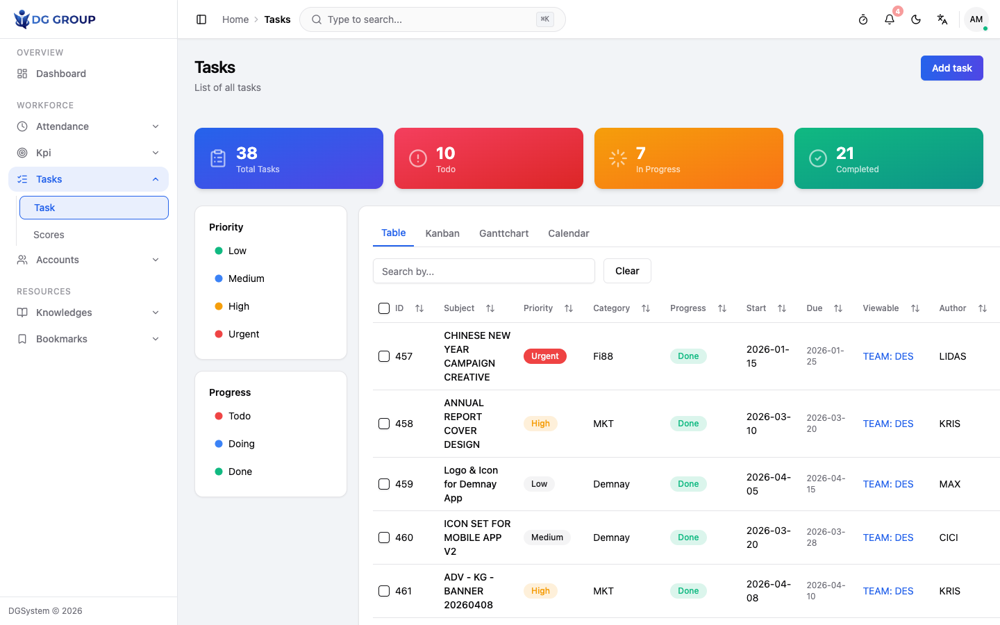
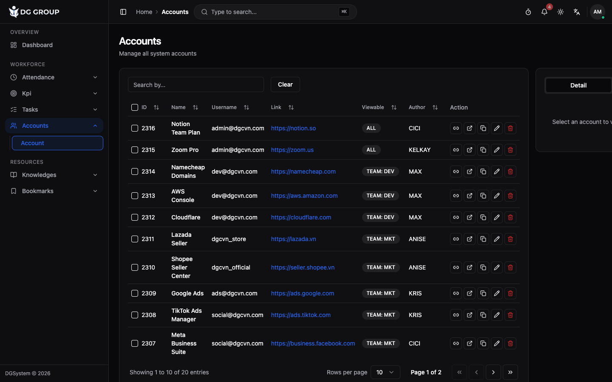
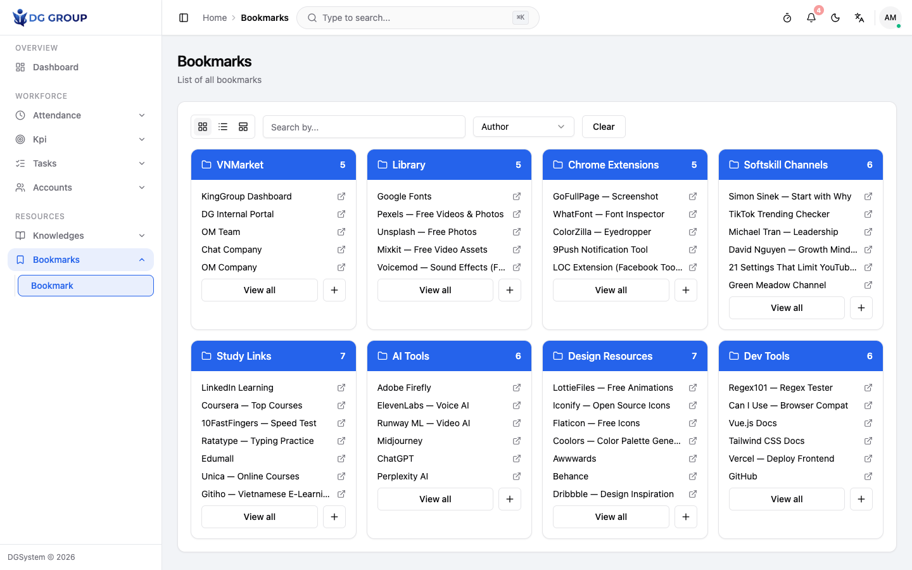

Designing a unified internal operations platform that replaced five disconnected tools with one cohesive, accessible desktop interface for a creative design team.

An 8-person creative team managed daily operations across spreadsheets, Telegram threads, and informal processes. There was no single interface where a team member could check their own attendance, see task status, or find shared credentials.
Managers had to manually compile KPI reports, task progress lived in group chats that scrolled away, and new team members didn't know where to look for anything. The experience was fragmented, error-prone, and frustrating.
Design question
How do you design one consistent interface that makes every team member's daily workflow feel effortless — regardless of their role?
I mapped the team's daily touchpoints against available tools to identify where UX gaps were causing the most friction. Methods: stakeholder walkthroughs, observation of daily workflows, and a competitive teardown of alternatives.
Primary Persona
Alex — Graphic Designer
Mid-level, 2 years on the team
Goal: Know my attendance, KPI score, and task list without asking anyone.
Frustration: Can't find yesterday's check-in time. HR sends it separately each month.
Behaviour: Checks Telegram every morning for updates. Misses pinned messages frequently.
Secondary Persona
Manager — Creative Lead
Oversees all 8 team members
Goal: See team attendance, task progress, and KPI standing at a glance each morning.
Frustration: Manually compiles KPI scores from a spreadsheet every two weeks.
Behaviour: Sends status-update messages in group chat; half go unread.
| User Need | Current Experience | DGSystem Design |
|---|---|---|
| Check my attendance | Ask HR or wait for monthly email | Self-serve calendar heatmap per employee |
| Track task progress | Scroll through Telegram chat history | Table + Kanban with due-date countdown badges |
| See my KPI score | Wait for manager to compile spreadsheet | Personal leaderboard view, always current |
| Find shared credentials | Ask in group chat or search old messages | Searchable accounts vault with categories |
| Read announcements | Telegram — pinned items get buried | Typed posts with unread indicator + pin |
| Know who is online today | Not possible without messaging everyone | Live team presence panel on dashboard |
| Access shared resources | Bookmarks in individual browsers | Team-wide bookmark and knowledge archive |
After mapping the research findings, I reframed the problems as How Might We statements to open up the design space before committing to solutions.
How might we let team members check their own attendance without contacting HR?
→ Led to: Self-serve calendar heatmap per employee
How might we make KPI scores visible and fair without a manager manually compiling them?
→ Led to: Leaderboard with approval workflow
How might we surface task updates without relying on group chats that scroll away?
→ Led to: Persistent task board with due-date indicators
How might we give the manager a morning overview of the team's status in under 30 seconds?
→ Led to: Dashboard with live clock, presence, task ring
Before any visual design, I mapped the key user flows and sketched low-fidelity wireframes for the most-used screens to validate layout and hierarchy early.
Key User Flows
Low-Fidelity Wireframes
Information Architecture
I ran informal usability walkthroughs with 3 team members across two rounds, focusing on the most-used screens: attendance, tasks, and the dashboard.
Round 1 — Issues Found
"I don't know which month this is showing without scrolling up."
"I see the entries but where do I approve them?"
"These all look the same — I can't tell which ones are late."
What changed after testing
Testers didn't know which period was showing without context.
Non-admins were confused by review buttons they had no permission to use.
Tasks were visually identical — urgency was invisible at a glance.
On smaller laptops the sidebar was eating too much horizontal space.
Colour Palette
Typography Scale
Every screen is designed around a single daily job-to-be-done. The sidebar stays visible at all times so context is never lost mid-task.





